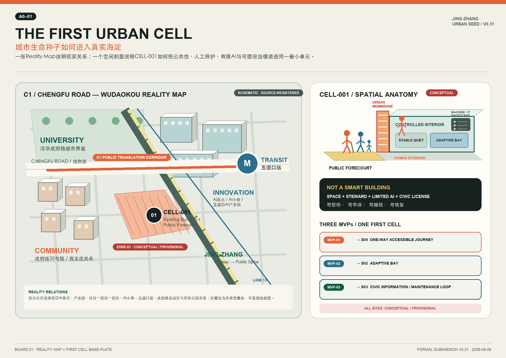
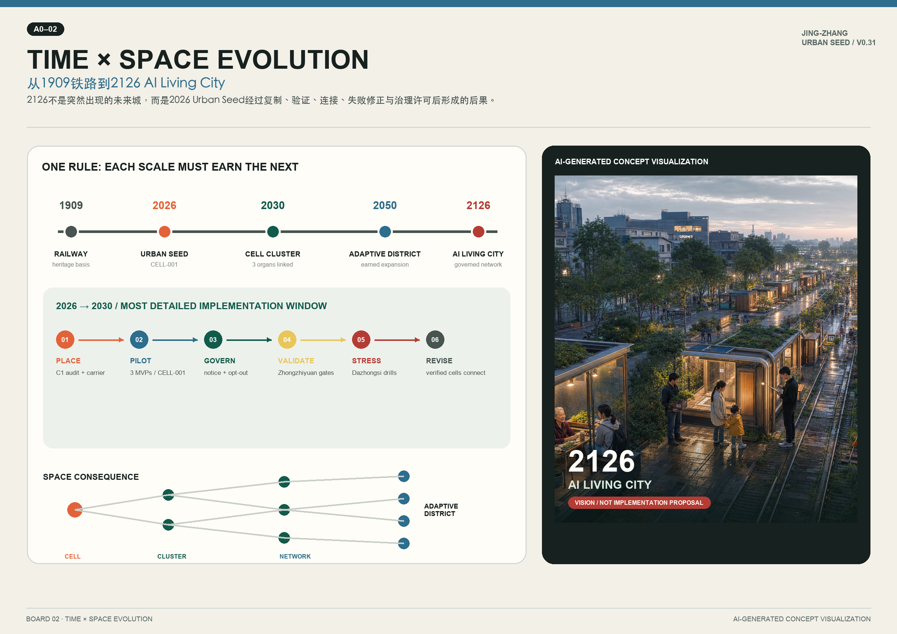
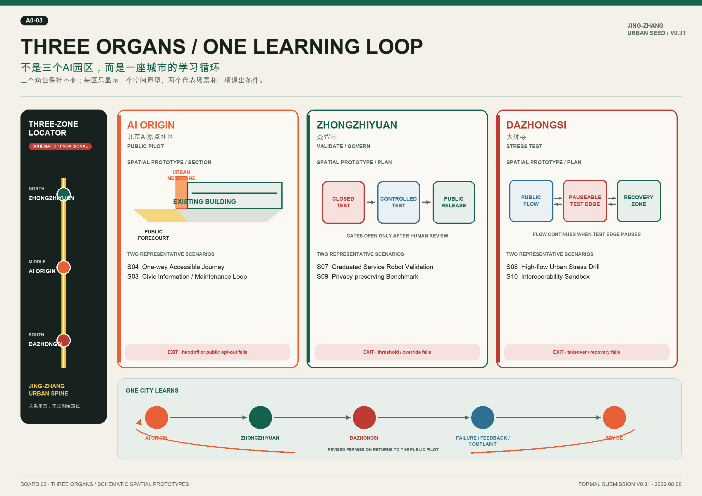
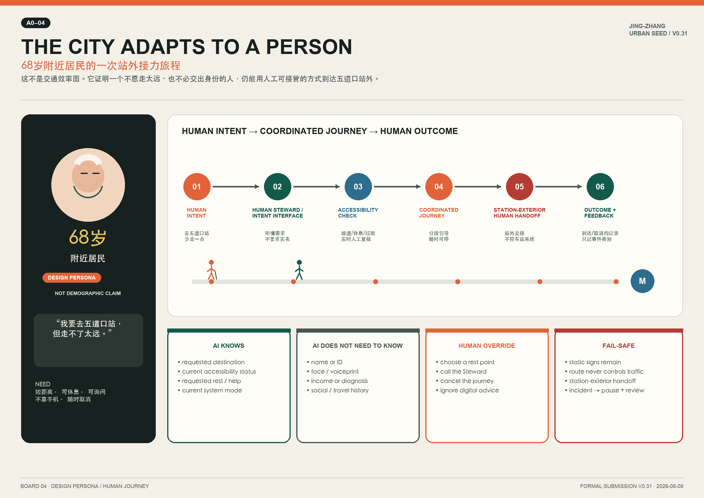
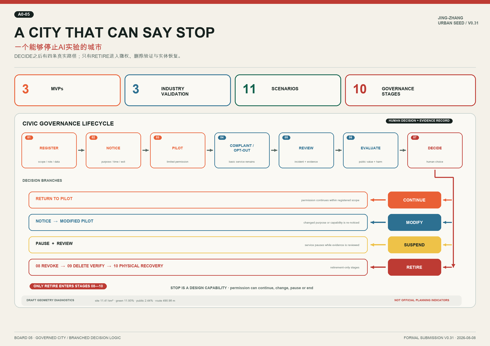

京张·城市生命种子
以铁路遗产公共脊柱为母体，以可撤回的城市细胞为最小实施单元，在2026-2030年形成公共转译、验证治理与城市压力测试闭环。V0.31完成评委沟通、空间表达与证据状态的最终一致性校正。
京张·城市生命种子
**JING-ZHANG URBAN SEED** | **FINAL READINESS PASS V0.31**
总命题不是把AI设施散落到城市，而是让一条由铁路记忆转化而来的公共脊柱，持续生成、测试、评估并在必要时撤回“城市细胞”。结构演化锁定为：**Railway → Urban Spine → Urban Cell → Cell Cluster → Cell Network → Adaptive District → AI Living City**。2026-2030是主实施窗口；2126仅为受治理约束的远景，不替代近期公共价值、场地核验和安全责任。
30-SECOND JURY SUMMARY
- **WHY**｜AI进入真实城市之前，需要一个公众看得懂、管理者停得下、维护者退得出的试点单元。
- **WHAT**｜Urban Cell = 可逆空间载体 + Human Steward + 有限AI功能 + 全生命周期治理许可；它不是普通智慧建筑。
- **WHERE**｜从成府路—五道口 C1 现实关系中的 **CELL-001 / ZONE-01 CONCEPTUAL CANDIDATE** 起步。
- **HOW**｜AI原点 Public Pilot → 众智园 Validate / Govern → 大钟寺 Stress Test → Failure / Feedback / Complaint → Revise。
- **FIRST PILOT**｜Existing Building + Public Forecourt承载三个MVP，先验证一段旅程、一个Adaptive Bay和一条公共信息/维护闭环。
- **WHY IT MATTERS**｜城市开始适应人，同时保留人工接管、暂停、撤销、删除验证与实体恢复能力。
01 设计依据与资料清单
本稿以公告的三层范围、三处重点区域和成果深度为主控，以面向智能体任务书的六项任务作为开放式创新补充，以场地包的 schema、enum、allowed design space 和 missing-data checklist 约束结构化输出。[source:OFFICIAL-ANNOUNCEMENT] [source:AGENT-TASKBOOK] [source:SITE-PACKAGE] [source:PROCESSED-FACT-PACK] 处理资料包只承担导航作用，事实仍回到登记来源。用地语义依据 [source:LAND-USE-GUIDE]；公共空间、风貌与建筑界面响应 [source:URBAN-DESIGN-MEASURES]；所有控规结论均受 [source:CONTROL-PLANNING] 的审批边界约束。
Reality Map采用官方公开页面重绘为矢量关系底图，不调用商业地图截图。AI原点现实范围、五道口先导区、产业园与社区—校区—园区关系依据 [source:REALITY-AI-ORIGIN] [source:REALITY-WUDAOKOU-AI-PARK] [source:REALITY-CAMPUS-PARK-COMMUNITY] [source:REALITY-JINGZHANG-AI-BELT]；AI小巷与AI会客厅作为已运营公共界面依据 [source:REALITY-AI-ALLEY]。C1所处的成府路—五道口—京张启动区关系依据 [source:REALITY-JINGZHANG-COCREATION] [source:REALITY-JINGZHANG-PARK]；五道口站无障碍设施与清华成府路界面分别依据 [source:REALITY-WUDAOKOU-SUBWAY] [source:REALITY-TSINGHUA-CHENGFU-WDK]。这些来源支持**现实关系**，不把ZONE-01或CELL-001变成已确认选址。
目前仅有临时粗略边界 [source:PROVISIONAL-BOUNDARIES]。提交中的 [data:geometry/site_boundary.geojson#SITE-001] 与 [data:geometry/key_areas.geojson#PROV-KEY-001] 明确保留 official_boundary=false / geometry_role=provisional_constraint / boundary_precision=provisional_rough。因此 [metric:site_area_sqm] 是按统一投影可复算的草案几何值，不是官方精确面积；三重点区仅以 [metric:key_area_count] 表达数量。官方红线、地块、道路、建筑、权属、市政、消防、文保和公共设施底图仍是前置缺口。
本方案采用“事实→假设→几何→指标→正文→图纸/HTML”的单向证据链。事实不能被设计记忆替代；设计记忆只形成提案选择。核心风险进入 assumptions.json，自检结论进入 self_check.json。专业响应覆盖 [standard:PROJECT-OFFICIAL-ANNOUNCEMENT]、[standard:PROJECT-AGENT-OPEN-CALL-TASKBOOK]、[standard:MOHURD-URBAN-DESIGN-MEASURES]、[standard:MOHURD-CONTROL-DETAILED-PLANNING]、[standard:MNR-LAND-USE-CLASSIFICATION-GUIDE] 与待补资料项 [standard:MOHURD-ARCH-DESIGN-DEPTH-2016]。[depth:existing_conditions_diagnosis]

02 三层范围工作框架
统筹研究范围以约43.6平方公里的创新生态、产业链和未来城市形态为研究尺度；总体设计范围以约11.4平方公里的京张遗址公园周边城市地区为更新尺度；重点区域范围以众智园、北京AI原点社区、大钟寺三处区域为详细设计尺度。公告面积用于任务识别，提交几何用于草案自检，二者不得互相冒充。[source:OFFICIAL-ANNOUNCEMENT] [data:geometry/site_boundary.geojson#SITE-001] [data:geometry/key_areas.geojson#PROV-KEY-002]
总体策略把“铁路”视为历史、生态和公共生活的连续基底，把“城市脊柱”视为串联三器官的公共基础设施，把“城市细胞”视为可逆、可登记、可申诉、可退役的最小试点。细胞不是自治机器，而是空间载体、人工服务、治理许可与有限AI功能的组合。细胞簇在2028-2030年才形成；网络扩展以同一治理注册表、人工复核和权限撤销能力为门槛；Adaptive District 与 AI Living City 都是通过持续评估获得的状态，不是预先承诺的建设形态。[depth:three_level_scope_framework] [depth:overall_spatial_structure]
三层之间采用闭环：统筹研究提出机制假设，总体设计选择公共脊柱与走廊，重点区用具体细胞验证；验证结果再回写总体空间和产业策略。主图中用地、道路、绿地、公共空间、载体和分期都来自同一边界派生，不承担现状测绘或审定用地功能。[data:geometry/land_use.geojson#LU-003] [data:geometry/roads.geojson#ROAD-SPINE-001] [data:geometry/phasing.geojson#PHASE-001] [metric:conceptual_candidate_zone_count]

03 统筹研究范围产业与未来城市研究
产业生态不以“多装设备”为目标，而以三种公共能力为骨架：北京AI原点承担 **Public Translation Organ**，把研究成果转译为普通人可理解、可试用、可退出的公共服务；众智园承担 **Validation & Governance Organ**，提供分级验证、技术审计、治理登记与独立评估接口；大钟寺承担 **Urban Interface & Stress-Test Organ**，在高流量、复合商业和复杂交界面验证系统是否仍能保持可解释、可申诉和人工接管。三器官构成 **DESIGN → PILOT → VALIDATE → STRESS TEST → FEEDBACK → REVISE** 的循环。[source:AGENT-TASKBOOK] [depth:overall_spatial_structure]
统筹范围的资源组织采用“高校/科研策源—开源协作—企业转化—公共翻译—城市压力测试—治理反馈”的链条。空间供给分为稳定安静空间、可预约协作空间、公开展示前场、受控测试空间和城市接口空间。方案只把真实机构作为需要正式协议的潜在参与类型；本版不使用未完成来源登记的国际案例名称，比较逻辑直接回到海淀的现实关系、三器官闭环和可撤回治理能力。
未来城市研究设置两条底线：第一，技术成熟度不能替代公共价值和专业审查；第二，城市形态不能从未经核验的坐标、建筑或运营承诺中推导。近期评价关注公共理解、人工接管、投诉处理、权限撤销、可维护性与包容性；2126远景只有在这些能力稳定累积时才有意义。[metric:industry_validation_scenario_count] [depth:risk_missing_data]
04 总体设计范围城市更新与控规深度城市设计
总体设计以“城市生命脊柱 + 三器官 + 可逆细胞”组织更新。提交的四段用地是完整覆盖边界的**概念意向分区**：南段城市界面与产业服务、中南段公共服务与生活支持、中段公共转译与近校创新、北段验证治理与开放创新。它们只建立议题和空间关系，不代表现状用地或审定控规；法定用途、容积率、高度、密度、退线、道路红线与建筑控制线均待官方条件。[data:geometry/land_use.geojson#LU-001] [standard:MOHURD-CONTROL-DETAILED-PLANNING] [standard:MNR-LAND-USE-CLASSIFICATION-GUIDE] [depth:land_use_layout] [depth:development_intensity_controls]
更新动作按“保留稳定底座—轻改公共界面—插入可逆设施—评估后扩展”排序。首先建立可被人工管理的 Commons 和公共前场；其次通过 Adaptive Bay 和低风险信息设施验证空间适应性；最后才讨论细胞簇与跨区网络。概念建筑基底只表达三类载体需求，其投影面积 [metric:building_footprint_area_sqm] 不代表现状建筑量、拆改留结论或建设规模。[data:geometry/buildings.geojson#BLDG-CELL-001]
综合承载力评价不提前填入伪精确值，而建立待补清单：交通与无障碍需现场审计；市政与消防需专业条件；权属与公共性需法律核验；运营需角色协议；数据处理需影响评估。只有这些门槛被逐项关闭，分期图层才从讨论范围转为实施范围。[data:geometry/constraints.geojson#GAP-REGULATORY-001] [depth:renewal_project_list] [depth:phasing_implementation]
05 重点区域详细设计
**众智园｜Validation & Governance Organ。** 空间上设置分级测试载体、审计展示界面、人工复核席和低碳交往前场；功能上服务自主技术验证、标准对照、安全治理和可复现评估；建筑上优先适配可分隔、可停机、可恢复的实验单元；交通上强调对外接驳与测试流线分离；公共空间只展示可公开的验证结果，不开放未审计数据。近期项目为验证注册台、人工接管演练和独立评估协议；正式载体与参与单位均待协议。[data:geometry/key_areas.geojson#PROV-KEY-001] [data:geometry/buildings.geojson#BLDG-VAL-001]
**北京AI原点社区｜Public Translation Organ。** 主焦点是C1成府路-五道口优先走廊及CELL-001 Commons。三候选区比较后，ZONE-01“原点社区南缘—AI Alley南口界面”为第一推荐，但仍只标为 **CONCEPTUAL CANDIDATE ZONE**；ZONE-02与ZONE-03保留为可替换选项。主载体为 **Existing Building + Public Forecourt**，未来才可能扩展为 Distributed Cell。空间界面以 Urban Membrane 表达 Public ↔ Controlled 的可读边界，Stable Quiet 区不允许自动变形。[data:geometry/key_areas.geojson#PROV-KEY-002] [data:geometry/constraints.geojson#ZONE-01] [data:geometry/public_space.geojson#PUBLIC-001]
**大钟寺｜Urban Interface & Stress-Test Organ。** 以复合商业、人流高峰、轨道接驳和多象限步行为压力条件，检验导视、隐私保护、人工接管和跨细胞协同是否仍成立。空间动作包括清晰的公共/受控界面、可暂停的测试点、冲突监测与恢复区；建筑承载以复合功能、设备可回收和不干扰生命安全系统为原则；项目启动前必须完成轨道、道路、产权、消防和高流量人群管理审查。[data:geometry/key_areas.geojson#PROV-KEY-003] [data:geometry/public_space.geojson#PUBLIC-003]
三处深度共同覆盖定位、功能、载体、拆改留方法、公共空间、慢行交通、实施项目、依赖条件和退出机制。由于三处边界仍为临时 polygon，详细设计是机制与空间组织深度，不是施工图或审定综合实施方案。[depth:three_key_area_detailed_design]

06 AI 创新生态、人才画像与 AI+ 场景
五个具体 **Design Persona** 用于设计测试：P01 68岁附近居民，需要短距离、可坐可问、不中断的站外接力；P02 22岁大学生，需要稳定学习与可预约协作；P03 32岁AI创业者，需要可信验证、公开转译与失败边界；P04 35岁带孩子家长，需要低认知负担、可退出和安静权；P05 48岁城市维护人员，需要可诊断、可停机、可恢复。必要的P06管理/评估角色负责审计、投诉闭环与权限撤销。**Design personas are design-testing constructs, not demographic claims.** 它们不声称人口结构，也不生成个人身份画像。[source:AGENT-TASKBOOK]
最终冻结 **11个场景**，S12不计入场景而作为共享治理层。[metric:scenario_count]
- **S01 Commons Open Study**：CELL-001稳定开放学习；公开日历和人工值守；不采集身份画像；KPI为开放时段兑现率。
- **S02 Adaptive Bay**：只在 Open Study 与 Small-group Collaboration 间切换；由Human Steward确认；Stable Quiet永不自动变形；KPI为人工确认的模式切换成功率。
- **S03 Civic Information / Maintenance Loop**：在载体与公共前场发布经人工审核的低风险导视、设施状态和维护回执；把公众报修转为可追踪的人工维护闭环；明确排除消防、医疗、铁路、道路交通和生命安全信号。
- **S04 One-way Accessible Journey**：只测试从CELL-001到五道口指定站外人工交接点的一类单向旅程；人工可全程接管；KPI为完成率与求助响应时间。
- **S05 Human Steward Handoff**：当置信度不足、用户求助或设施异常时移交人工；只记事件类别和处理时长；KPI为接管时延。
- **S06 Public Feedback Assembly**：公告试点目的、时段、数据与退出方式，收集意见并公开修订；不以人脸或设备ID追踪意见人；KPI为反馈闭环率。
- **S07 Graduated Service Robot Validation**：第一产业验证场景；在众智园由封闭测试到受控公开测试逐级放行，未过门槛不得进入公共空间；KPI为门槛通过率和人工接管成功率。
- **S08 High-flow Urban Stress Drill**：在大钟寺模拟高流量、网络中断、投诉峰值与设施停机；以可暂停、可恢复为合格条件；KPI为恢复时间。
- **S09 Privacy-preserving Spatial Intelligence Benchmark**：第二产业验证场景；比较不存原始影像、边缘聚合和人工抽查方案；KPI为任务准确率、数据最小化和删除验证率。
- **S10 Cross-cell Agent Interoperability Sandbox**：第三产业验证场景；验证跨细胞消息格式、权限边界、版本回退和责任记录；KPI为互操作成功率与错误隔离率。
- **S11 Distributed Cell Network**：仅在三个MVP及治理层复核后连接多个细胞；网络扩展按最弱节点门槛控制；KPI为跨点服务连续性和撤销完成率。
三项产业验证明确为 S07、S09、S10，共 [metric:industry_validation_scenario_count] 项；S08是额外城市压力测试，不替代三项产业验证。每个场景都必须有服务对象、空间位置、最小数据、人工复核、责任角色、启动门槛、暂停条件与退役路径。
三个MVP与场景采用唯一映射：**MVP-01 → S04 One-way Accessible Journey；MVP-02 → S02 Adaptive Bay；MVP-03 → S03 Civic Information / Maintenance Loop**。[metric:mvp_count] MVP-01只是一类单向旅程，MVP-02只在两种空间模式间由人工确认切换，MVP-03只形成低风险公共信息与维护闭环；不允许把编号扩展成新场景。
07 用地、建筑规模与拆改留方案
用地分区采用正式分类代码只是为了统一语义与拓扑校验，不意味着获批用途。四段 polygon 完整覆盖临时总体边界、无面积重叠；更换官方边界后必须整体重算。概念绿地 [metric:green_space_area_sqm] 与 [metric:green_ratio]、公共空间 [metric:public_space_area_sqm] 与 [metric:public_space_ratio] 均由提交几何复算，但置信度为低，不能作为法定绿地率、公共空间率或开发控制。[data:geometry/green_space.geojson#GREEN-001] [data:geometry/public_space.geojson#PUBLIC-002]
建筑策略采用 R/R/R/N 四类待核验清单：Retain 保留稳定安静载体；Retrofit 轻改可达性、机电和公共界面；Recover 对不适用设备和临时构件恢复原状；New 只有在控规、权属、消防、市政和公共价值同时成立时讨论。当前三个 building feature 都是概念载体，不是调查出的现状建筑。CELL-001优先选择可用既有建筑与公共前场，以减少不可逆建设；任何拆除、新建面积、层数和高度均保持 unknown。[depth:retain_renovate_demolish]
空间性格以铁路工业记忆的秩序、低碳可维护材料和清晰公共边界为主，不复制历史符号。屋顶、体量、色彩、天际线和街墙只给方法：控制设备暴露、保持首层可读、让人工服务可见、避免高亮屏幕侵入安静界面。具体高度和体量需 official control 与建筑专业深化。[standard:MOHURD-URBAN-DESIGN-MEASURES] [depth:height_massing_character]
08 交通、轨道、市政与公共服务设施
交通骨架由一条概念城市生命脊柱、C1优先走廊和MVP-01单向旅程组成。[data:geometry/roads.geojson#ROAD-C1-001] C1不是道路红线或测绘中心线；[metric:mvp01_route_length_m] 只是临时 route geometry 的复算长度。MVP-01只验证一种旅程类别，从CELL-001至五道口指定站外人工交接点；不进入车站受控系统，不控制铁路设施，不扩展到多目的地调度。启动前需无障碍连续性、过街、坡度、照明、夜间安全和人工接力现场审计。[depth:traffic_rail_slow_parking]
市政策略采用轻量、可回收、故障安全：信息设施断网时回到静态指引；Adaptive Bay断电时保持安全静止；边缘设备只处理最小必要数据；人工值守和手动停机始终可用。分布式能源、端侧算力、排水、消防、通信和设备荷载均是专业待确认项，不在本稿给出工程容量。[depth:municipal_new_infrastructure]
公共服务不是单一App，而是空间、人工和数字三通道并列：实体标识提供最低可用信息，Human Steward提供解释与接管，数字接口只补充预约、反馈和状态。服务必须支持无智能手机用户、视听障碍用户、临时访客与不愿提供数据者；Opt-out不能降低基本公共服务。

09 蓝绿空间、公共空间与城市风貌
蓝绿系统以京张方向的概念绿脊为连续基底，并在三个器官处形成可停留、可解释、可恢复的公共界面。该图层是设计提议，不是现状水绿调查或规划绿线；清河、小月河、铁路遗产、公园节点的精确边界和工程关系必须在官方资料补齐后深化。[data:geometry/green_space.geojson#GREEN-002] [depth:blue_green_public_space]
CELL-001 Base Plate把场地分为 Public Forecourt、Urban Membrane 与 Controlled Interior。公共前场提供不注册也能使用的基本服务；膜界面展示当前模式、数据说明、人工负责人、暂停状态和投诉入口；受控内部只容纳已经登记的低风险功能。Stable Quiet作为常态底座，不因客流、算法建议或活动排期自动变换。可动设施有物理锁定、人工确认和恢复原位要求。
城市风貌采用“铁路秩序线 + AI状态点 + 植物生长面”的视觉语法：线表示连续公共脊柱，点表示可撤回细胞，半透明面表示权限与公共性。导视避免企业品牌占领公共空间；任何Logo、人物、建筑照片和第三方字体使用前完成权利核验。夜间亮度、声音、屏幕朝向与活动时段需通过居民反馈和现场测试。
10 更新项目清单、实施政策与分期计划
**2026-2027 / Seed Phase。** P01完成C1现场踏勘、无障碍审计与三候选区评分；P02在ZONE-01或替代区确认Existing Building + Public Forecourt；P03建立CELL-001 Commons；P04分别上线MVP-01、MVP-02、MVP-03的单功能版本；P05启用S12共享治理注册表。每一项都以正式场地/运营协议、公共公告、隐私与安全审查为启动门槛。[data:geometry/phasing.geojson#PHASE-001]
**2028-2030 / Cluster Phase。** 在三MVP持续评估、投诉闭环、人工接管和撤销能力达到门槛后，把原点公共转译、众智园验证治理和大钟寺压力测试接成闭环；形成有限细胞簇，验证S07、S09、S10三项产业场景和S08城市压力场景。扩展采用逐点许可，任何节点失败可单独暂停，不拖累基本公共服务。[data:geometry/phasing.geojson#PHASE-002]
**2031-2050 / Adaptive District Research；2051-2126 / AI Living City Vision。** 后两阶段只是可供专业团队周期复核的方向。2126不预设基础设施、数据制度或组织模式；每轮评估都可 Continue / Modify / Suspend / Retire。近期项目优先级依据公共价值、可逆性、数据最小化、人工可接管、维护可行与公平性，不以技术新颖度单独排序。[data:geometry/phasing.geojson#PHASE-003]
实施政策包括：角色协议而非机构预设；小额可逆试点而非先建后证；公共公告与Opt-out同等重要；独立评价与运行团队分离；事件复盘产生下一版设计输入；实体恢复和数据删除均须验证。资金、责任主体、采购、保险、审批和工程方案目前未确认。
11 指标体系、面积复算与合规矩阵
空间指标由GeoJSON复算：临时总体面积、概念建筑基底、概念绿地、概念公共空间、三重点区数量、三候选区数量和MVP-01路线长度。方案结构指标包括 [metric:scenario_count]、[metric:industry_validation_scenario_count]、[metric:mvp_count] 与 [metric:governance_stage_count]。这些“known”只表示提交包内可复算或可计数，不表示真实世界已建成、已运行或达到绩效。
运营KPI在试点前保持空值，并写明公式和未来数据源：MVP-01成功率=完成旅程/尝试旅程；MVP-02成功率=人工确认成功切换/请求切换；MVP-03信息与维护准确率=人工审计正确信息及状态回执/审计项目；投诉处理时长=投诉至关闭总时长/已关闭投诉；撤销完成率=通过验证的完成撤销/批准撤销。[depth:metrics_recalculation]
合规矩阵覆盖公告1.3、1.4、1.5与agent.1-agent.6，标准矩阵覆盖项目依据、城市设计、控规深度与用地分类，设计深度矩阵覆盖现状诊断、三层框架、总体结构、用地、强度、建筑体量、拆改留、交通、市政、蓝绿公共空间、三重点区、项目清单、分期、复算和风险。图纸中的所有面积与比例从 metrics.json 读取，不单独手填。

12 风险、版权与合规说明
S12被重构为所有MVP共享的 **CIVIC GOVERNANCE LAYER**，不是第四个MVP或第十二个场景。生命周期登记 [metric:governance_stage_count] 类阶段：七个共同阶段 **Register → Public Notice → Pilot → Complaint / Opt-out → Incident Review → Evaluation → Decide**，加上仅在退役分支启用的三类阶段 **Permission Revocation → Data Deletion Verification → Physical Recovery**。DECIDE之后形成四条真实分支：**Continue → return to Pilot；Modify → Public Notice / modified Pilot；Suspend → Pause + Review；Retire → Permission Revocation → Data Deletion Verification → Physical Recovery**。撤权、删除验证和实体恢复只属于Retire，不是每次决定的自动后果。每一阶段都有责任角色、证据记录、人工决定与最长保留期限。
**City OS 0.1 / Urban Cell Protocol** 只表达上述既有运行逻辑：**Human Intent → Local Urban Agent → Capability Registry → Permission → Human / Space / Service Action → Outcome → Audit / Feedback**。Governance & Human Override包围整个闭环，并可在任何许可边界、异常或人工请求处暂停、接管或终止；该协议示意不增加场景、MVP或Urban Cell类型。
角色模型只写 Public Lead、Site Operator、Human Steward、AI Technical Operator、City Service Operator、Maintenance Operator、Independent Evaluator、Public Oversight、Privacy/Data Responsible Role、Emergency/Manual Override。任何真实政府部门、高校、企业、社区或运营商均只能标注 **POTENTIAL PARTICIPANT TYPE / NEEDS FORMAL AGREEMENT**。AI不替代审批、执法、医疗判断、消防控制、铁路行车或道路交通控制。
主要风险：临时边界导致空间精度不足；候选载体与公共性未核验；控规、权属和市政缺失；自动化引发误导和排斥；数据处理造成隐私和不公平；长期运维与撤销成本被低估；高流量场景放大故障。缓解措施是显著标注、场勘与专业审查、最小数据、人工接管、独立评估、公开投诉、权限撤销、数据删除验证和实体恢复。[data:geometry/constraints.geojson#ZONE-02] [depth:risk_missing_data]
文本、结构化数据、五张主图、2126愿景图和PDF由本次投稿生成；官方/用户提供资料仅按 sources.json 的许可边界引用。Reality Map为基于登记事实的原创矢量关系图，不复制远程图片、地图瓦片、字体、脚本、跟踪或表单。2126图是原创AI生成概念视觉，详细制作声明登记于 sources.json、agent.json 与 copyright_statement；板上只标记 **AI-GENERATED CONCEPT VISUALIZATION** 及 **VISION / NOT IMPLEMENTATION PROPOSAL**。本稿不声称官方批准、机构参与、最终选址、建设规模或实施确定性。
13 参考资料
正式依据为 [source:OFFICIAL-ANNOUNCEMENT]、[source:AGENT-TASKBOOK]、[source:URBAN-DESIGN-MEASURES]、[source:CONTROL-PLANNING]、[source:LAND-USE-GUIDE]、[source:PROVISIONAL-BOUNDARIES]、[source:SITE-PACKAGE]、[source:PROCESSED-FACT-PACK]。Reality Map依据为 [source:REALITY-AI-ORIGIN]、[source:REALITY-WUDAOKOU-AI-PARK]、[source:REALITY-CAMPUS-PARK-COMMUNITY]、[source:REALITY-AI-ALLEY]、[source:REALITY-JINGZHANG-COCREATION]、[source:REALITY-JINGZHANG-PARK]、[source:REALITY-WUDAOKOU-SUBWAY]、[source:REALITY-TSINGHUA-CHENGFU-WDK]、[source:REALITY-JINGZHANG-AI-BELT]。标准响应索引为 [standard:PROJECT-OFFICIAL-ANNOUNCEMENT]、[standard:PROJECT-AGENT-OPEN-CALL-TASKBOOK]、[standard:MOHURD-URBAN-DESIGN-MEASURES]、[standard:MOHURD-CONTROL-DETAILED-PLANNING]、[standard:MNR-LAND-USE-CLASSIFICATION-GUIDE]、[standard:MOHURD-ARCH-DESIGN-DEPTH-2016]。
机器证据还包括 [data:geometry/site_boundary.geojson#SITE-001]、[data:geometry/key_areas.geojson#PROV-KEY-003]、[data:geometry/land_use.geojson#LU-004]、[data:geometry/buildings.geojson#BLDG-STRESS-001]、[data:geometry/roads.geojson#ROAD-MVP01-001]、[data:geometry/green_space.geojson#GREEN-001]、[data:geometry/public_space.geojson#PUBLIC-001]、[data:geometry/constraints.geojson#CELL-001] 与 [data:geometry/phasing.geojson#PHASE-002]。深度索引补全 [depth:existing_conditions_diagnosis]、[depth:three_level_scope_framework]、[depth:overall_spatial_structure]、[depth:land_use_layout]、[depth:development_intensity_controls]、[depth:height_massing_character]、[depth:retain_renovate_demolish]、[depth:traffic_rail_slow_parking]、[depth:municipal_new_infrastructure]、[depth:blue_green_public_space]、[depth:three_key_area_detailed_design]、[depth:renewal_project_list]、[depth:phasing_implementation]、[depth:metrics_recalculation] 与 [depth:risk_missing_data]。
草案已知空间指标集中引用：[metric:site_area_sqm]、[metric:building_footprint_area_sqm]、[metric:green_space_area_sqm]、[metric:green_ratio]、[metric:public_space_area_sqm]、[metric:public_space_ratio]、[metric:key_area_count]、[metric:scenario_count]、[metric:industry_validation_scenario_count]、[metric:conceptual_candidate_zone_count]、[metric:mvp_count]、[metric:governance_stage_count]、[metric:mvp01_route_length_m]。确定结构指标进入主叙事；低置信度面积和比例只作为 **DRAFT GEOMETRY DIAGNOSTICS / NOT OFFICIAL PLANNING INDICATORS**。官方边界、CELL-001载体与公共性、运营协议和专业工程条件归入 **PENDING IMPLEMENTATION VERIFICATION**；这些事项必须在试点实施前关闭，但不把明确标注的概念性投稿判定为失败。